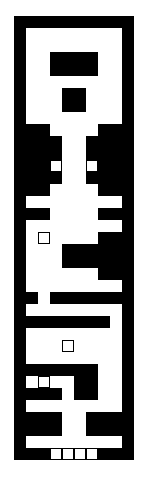
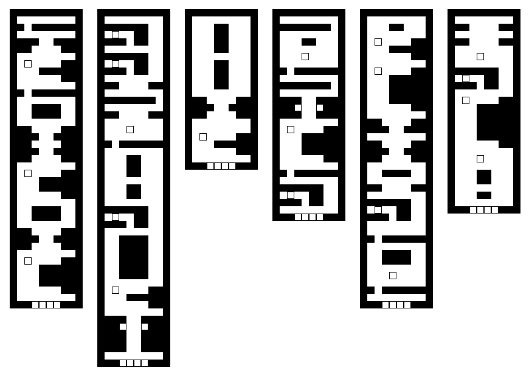

This write-up details the use of markov chains for tilemap-based level generation in 2D games. The approach detailed here was used in the game SCANLINE, a small action platformer written during the 2017 CGA jam.
Despite the simplicity of the implementation (fewer than 100 lines of lua) the use of markov chains can yield reasonable results. The feel and structure of generated levels can be quickly iterated on by simply changing the input map. More complex maps or different variations can be created by using a different or several different input maps.
The result is that we end up with interesting variations of maps — changing the feel of the generated map doesn't require any changes to code, only to that of the input.
As markov chains operate on one-dimensional sequences, the use of them for level generation is limited to levels that can be represented in such a way; thus even though the maps we're working with are represented by 2d arrays of tiles, we treat the data as a 1d array of tile "rows". This limitation makes the approach unsuitable for something like a traditional roguelike.
The implementation used in this write-up has been written in Lua using the LÖVE framework; for the purpose of this write-up a simple markov chains lua module was written, the implementation is available here.
The first requirement for this approach is to convert each row of the input tile map to a string such that it can be used with the module above. The tilemap is iterated and each tile of each row is converted to a byte in a string and pushed to a table; the table of rows can then be fed to the markov chain object.
local markov = require "markov"
local mc = markov.new()
local width, height = 6, 7
local map = {
1, 1, 1, 1, 1, 1,
1, 0, 0, 0, 0, 1,
1, 0, 0, 0, 0, 1,
1, 1, 0, 0, 1, 1,
1, 0, 0, 0, 0, 1,
1, 0, 0, 0, 0, 1,
1, 1, 2, 2, 1, 1,
}
local rows = {}
for y = 0, height - 1 do
local row = ""
for x = 0, width - 1 do
row = row .. string.char(map[x + y * width + 1])
end
table.insert(rows, row)
end
mc:add(rows)
This can be done several times with several pre-constructed input maps which we want the generated map to draw from. The map is generated by calling the the generate function. The simplest means of assuring the resultant map's length is within our desired bounds is to repeatedly generate the map.
local rows repeat rows = mc:generate() until #rows > 5 and #rows < 50
Though a more efficient approach could be taken to guarantee the resultant map's length, due to the speed of generating the map, the brute-force approach works well enough in practise.
Once we have the resultant table of rows we can convert the table of row strings back to a tilemap.
local map = {}
for i, row in ipairs(rows) do
local y, x = i - 1, 0
for chr in row:gmatch(".") do
map[x + y * width + 1] = string.byte(chr)
x = x + 1
end
end
As all level data is stored in the 2d map, for placement of entities (such as power-ups, enemies or other items) "special" tiles can be used to represent them. Once the map has been generated, we can scan for all these special tiles, remove them from the map and place the given entity at the tile's location.
Using the following map as our input data:
A handful of resultant maps are generated:
The maps strike a good balance between randomly generated and handcrafted. That is they feel both organic and structured but, due to randomness, each is different enough to the other to provide something unique. Note that the level of variation in the output maps increases as the input map grows or if more input maps are used.